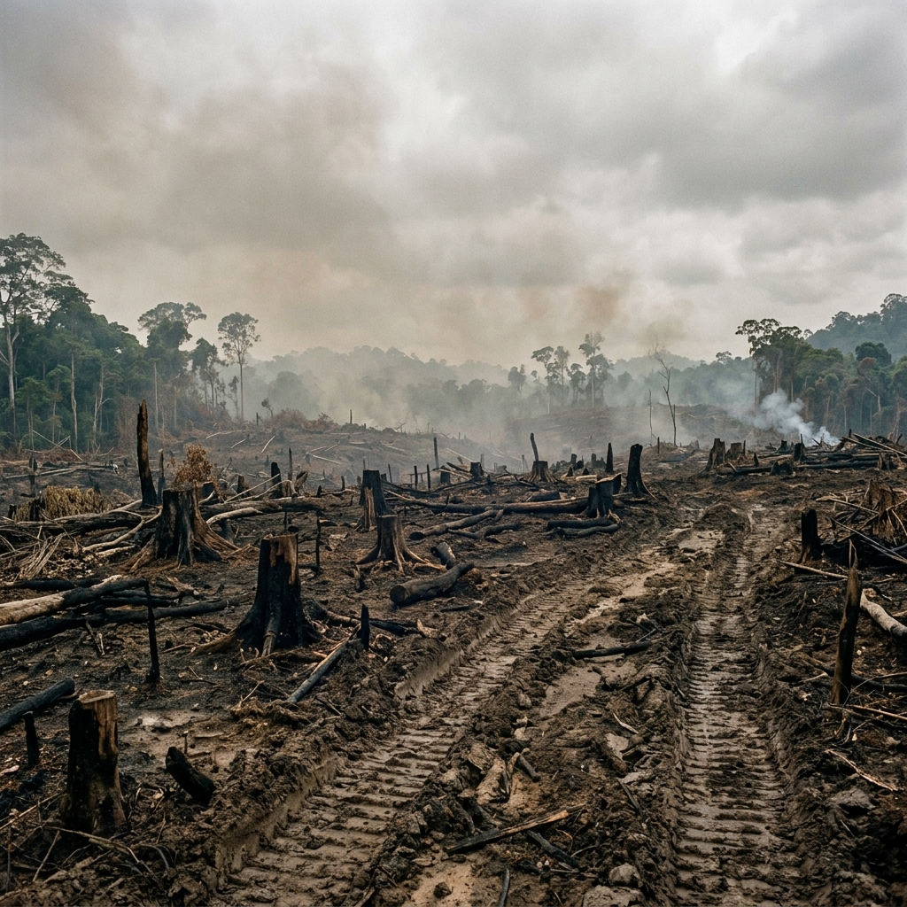
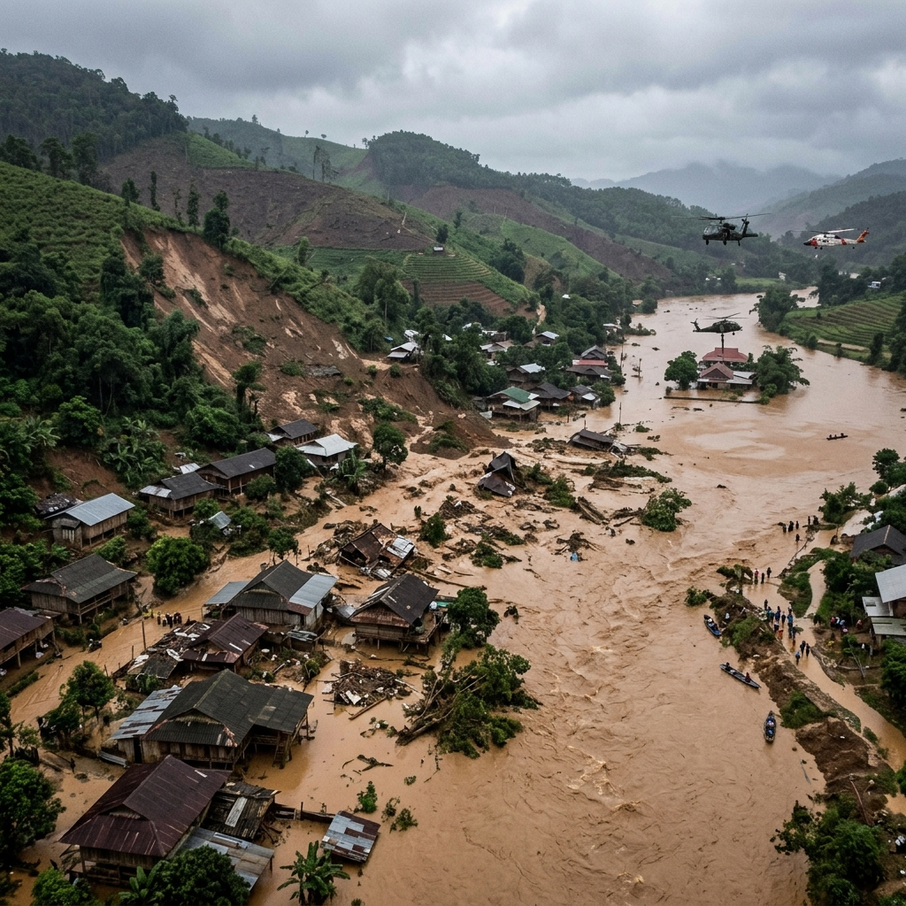

Background
Indonesia is one of the countries with the richest tropical forests in the world. With a forest area covering approximately 125 million hectares, Indonesia holds around 10% of the world's tropical forests and is home to thousands of plant and animal species found nowhere else on earth.
Between 2001 and 2023, Indonesia lost approximately 10.5 million hectares of primary forest — an area nearly equivalent to the entire landmass of Java. Under President Prabowo Subianto, deforestation in Indonesia reached 433,751 hectares in 2025, the highest figure in eight years, surging 66% compared to 2024.
433,751 hectares of forest gone in 2025 alone. The highest in eight years. The data has already begun to speak.
The Palm Oil Connection
President Prabowo Subianto's administration is heavily intertwined with the palm oil industry. Key figures within his cabinet and political inner circle hold substantial stakes in major palm oil concessions and agribusiness corporations. This convergence of political power and corporate interest has driven policies favoring rapid agricultural expansion over environmental conservation, setting the stage for the dramatic 66% surge in deforestation recorded during his first year in office.
Writing Objective
To analyze and present Indonesia's deforestation trends from 2001 through 2025, with a primary focus on the Prabowo administration period of 2024-2025, identifying driving forces, correlation with natural disasters, and broader socio-ecological consequences.
Problem Domain
- Is the rate of deforestation under Prabowo (2024-2025) worse than under previous administrations?
- Which specific policies have contributed most to forest loss?
- How strong is the correlation between deforestation and the rise of natural disasters in 2025?
- Who are the primary actors and sectors driving forest clearance?
- What are the long-term consequences if current trends continue?
Writing Methodology
This report relies exclusively on secondary data from credible sources: Auriga Nusantara's STADI 2025 (2021-2025), Global Forest Watch (2001-2024), BNPB for disaster data, KPA's CATAHU 2025 for agrarian conflicts, and peer-reviewed scientific analysis from UGM researchers.
Indonesia and Its Forests
Indonesia's tropical forests stretch from Sumatra, Kalimantan, Sulawesi to Papua. The forest estate encompasses approximately 125 million hectares, placing it third in the world for tropical forest coverage. Over the past half-century, more than 74 million hectares of rainforest have been lost — an area nearly twice the size of Japan.
125M ha
Total Forest Estate
10%
World's Tropical Forests
Two Decades of Loss: Reading the Trend (2001-2024)
From 2001 to 2023, Indonesia lost approximately 10.5 million hectares of primary forest. Deforestation peaked in 2016 at approximately 930,000 hectares. After 2016, the trend improved substantially — by 2021-2022, Indonesia recorded its lowest rate since 1990 at just 104,000 hectares. That positive trajectory collapsed sharply in 2025.
Annual Deforestation Rate, Indonesia, 2001-2025
Source: GFW (2001-2024) + Auriga Nusantara (2021-2025)
Deforestation Across Administrations (1998-2024)
Reform Era (1998-2004): Post-reform decentralization saw forest cover decline from ~106M to below 100M hectares — a loss of >6M hectares at ~1.4-2.4M ha/year.
SBY Era (2004-2014): Despite the 2011 moratorium with Norway, deforestation peaked at ~840,000 ha in 2012 — briefly surpassing Brazil. Moratorium zones saw a 45% drop by 2018.
Jokowi Era (2014-2024): The most significant reduction period. Primary forest loss declined from ~930,000 ha (2016) to just 104,000 ha (2021-2022). However, by 2024 it had risen to 261,575 ha.
Structural Roots: Why Deforestation Keeps Coming Back
Behind the numbers lies a deeper architecture: commodity dependency (oil palm = 23% of forest loss 2001-2016), overlapping permits (>3M ha allocated in violation of forestry law), corruption and regulatory capture, and El Niño as an accelerant.
An Inheritance Received, a Direction Chosen
When Prabowo took office in October 2024, he inherited a forest sector on an improving trajectory. In 2024, deforestation was 261,575 hectares. In less than a year, that trajectory reversed: 2025 deforestation surged to 433,751 hectares — a 66% increase. Auriga Chairman Timer Manurung was unambiguous: it is planned deforestation, carried out through the deliberate policies of the state.
The Policy Engine: What Is Driving the Clearance
Three major policy decisions are directly linked to the 2025 surge:
20.6M ha
Forest estate allocated for food/energy (Dec 2024)
78,123 ha
Deforested in food program zones (18%)
192,761 ha
Inside licensed concessions (44%)
486
Forestry permit holders involved
Choropleth Map: Deforestation by Province (2025)
The interactive map below shows the spatial distribution of deforestation across Indonesia's provinces in 2025. Hover over each marker to see detailed data. Red pulsing rings indicate provinces hit by the November 2025 Sumatra disaster.
Choropleth Map: Deforestation by Province, 2025
Source: Auriga Nusantara STADI 2025 / Simontini platform
Where the Forests Are Gone (2025)
Every major island experienced expanding deforestation. Kalimantan led with 158,283 ha. Papua surged to 77,678 ha (+348%). Java saw a 440% increase. Deforestation was recorded across 383 of 514 regencies (74%), with 71% occurring inside the state forest estate.
A Tale of Two Datasets
The Minister of Forestry claimed deforestation declined to 166,450 ha through September 2025. Auriga recorded 433,751 ha for the full year. The discrepancy reflects different definitions: the government uses a narrower definition, while Auriga covers all natural forest loss verified through field visits across 49,321 hectares in 38 villages.
When the state is simultaneously the primary driver of deforestation and the authority measuring it, independent monitoring is not a convenience — it is a safeguard.
Biodiversity in Crisis (2025)
78,113 ha
Sumatran Tiger habitat cleared
67,019 ha
Bornean Orangutan habitat destroyed
6,362 ha
Kerinci Seblat NP forest lost
28M ha
Papua intact forest remaining
Sumatra, November 2025: When the Data Became Real

Deforestation aftermath in Sumatra's upper watershed — machine-cut timber found in floodwaters

November 2025: Flash floods devastate communities across three provinces
Flash floods and landslides struck Aceh, North Sumatra, and West Sumatra. At least 1,204 people were killed and 140 remained missing — the deadliest disaster since 2018. More than 3.3 million people were affected and economic losses exceeded Rp 75 trillion.
More than 1,200 lives. 3.3 million people displaced. Rp 75 trillion in losses. All from a single rainy season, on a single island.
Not an Act of God. An Act of Policy.
The three provinces struck hardest are the same three that recorded the most dramatic deforestation surges: Aceh +426%, North Sumatra +281%, West Sumatra +1,034%. This is not coincidence. This is a pattern.
The Costs That Never Appear on the Balance Sheet
CELIOS projected losses at Rp 68.67 trillion. Other estimates push above Rp 200 trillion. In bitter irony, the BNPB budget was cut from Rp 4.92 trillion (2024) to just Rp 2.01 trillion — a >50% reduction in the very year of the worst disaster toll.
Who Actually Pays
KPA recorded 341 agrarian conflicts in 2025 — the highest in five years. Approximately 914,500 hectares and 123,000+ families across 428 villages were affected. Military violence cases surged 89%, with 736 victims of violence and criminalization.
Two Forests, Two Choices (2020-2025)
Under President Lula, Brazil reduced Amazon deforestation to its lowest in eleven years. Meanwhile Indonesia surged 66%. At this trajectory, Indonesia could become the world's top tropical deforester, overtaking Brazil.
Comparative Trend: Indonesia vs. Brazil, 2020-2025
Source: GFW & Auriga Nusantara
The Trajectory Ahead
Papua — with ~28 million hectares of intact forest — will become the national epicenter of deforestation within 2 to 3 years. Papua already recorded a 348% increase in 2025. When Papua is gone, no other major Indonesian island retains primary forest in significant quantity.